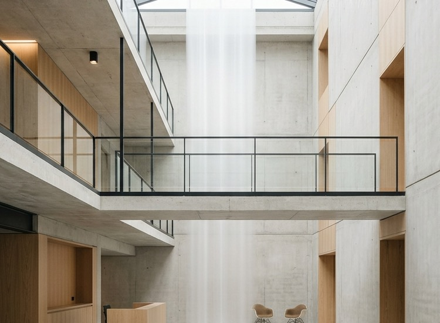
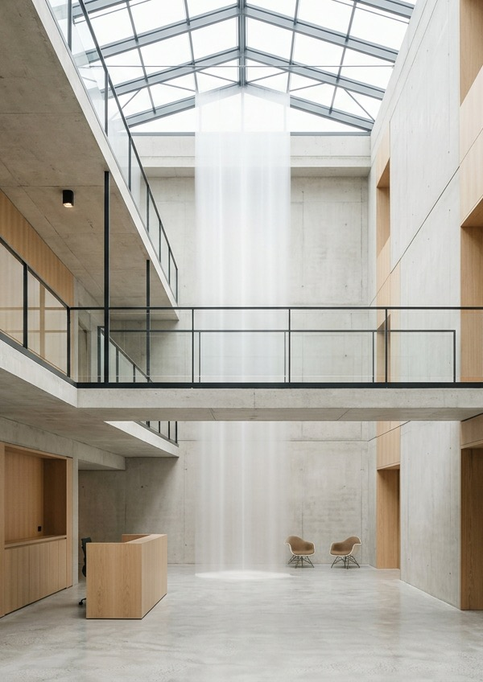

Edifício Vento
An office building organised around a double-height atrium, mezzanine walkway, and diffuse central skylight.

The central atrium core, viewing the elevated crossover bridge and skylight well.
Vertical porosity and
shared horizons.
Situated near the Atlantic coastline in Cascais, Edifício Vento reconsiders the contemporary commercial headquarters as a connected spatial landscape. The building rejects the alienation of stacked horizontal office floors, organizing its work environments around a grand double-height atrium that serves as both social lung and primary thermal regulator.
A sculptural concrete mezzanine bridge spans the open void, establishing spontaneous encounters between working teams and offering elevated perspectives across the ground-floor commons. Overhead, an elongated linear skylight introduces continuous diffuse zenithal daylight, dramatically reducing dependence on artificial illumination while tracking the movement of coastal clouds.
Acoustic linings crafted from sustainably harvested sandblasted Portuguese pine temper noise levels within the open volume, balancing visual transparency with concentrated auditory comfort. Passive wind-driven ventilation louvers purge warm air during maritime evenings, maintaining a temperate indoor microclimate with minimal mechanical intervention.

